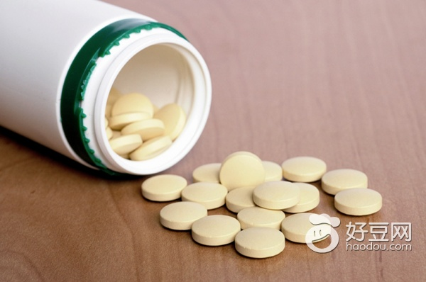

服用降压药并非吃“自助餐”，不可随意选用，否则，点的“菜”可能会“伤了食”，或者“食物中毒”，不但降不了压，反而惹火上身，引发这样那样的毛病。

文 ：张乾 编辑 ：栾兆琳
来源：《大众健康》
很多高血压病人习惯在家自己服药治疗。不错，医学知识的宣传和购买药物的便利的确让家庭自疗越来越有效。但降压药物铺天盖地，进了药店，犹如进了自助餐馆，只要你说血压高，店主或药师随便就可给你推荐十几种甚至几十种降压药。
然而，服用降压药并非吃“自助餐”，不可随意选用，否则，点的“菜”可能会“伤了食”，或者“食物中毒”，不但降不了压，反而惹火上身，引发这样那样的毛病。
进“海鲜馆”点“涮羊肉”
如果你走进海鲜馆，要吃涮羊肉，人家肯定说你“白帽子”、“老赶”。
一位老人有多年高血压病史，血压持续在180/110毫米汞柱以上，长期用药无效。原来他服用的都是些肠溶性阿司匹林、藻酸双酯钠、丹参片、冠心苏合丸、维生素E等非降压药，没有一种药真正具有降压作用。实际上，这位老人长时间错把非降压药当成降压药来服，这不就像把羊肉片当成鱼鳖虾蟹等海鲜了吗?
降压药是指的确能使升高的血压降低的药物，并不是笼统的指用于心血管病的药。也难怪，近年来，抗高血压药物更新换代相当快，特别是β受体阻滞剂、钙拮抗剂和血管紧张素转换酶抑制剂等新型降压药的出现，种类繁多，药名林林总总，不说病人搞不清楚，就是有些医务人员也有些糊涂。所以，你降血压，首先要弄清你选的是不是真正具有降压作用的药物。
胃口难调 选非所需
一位高血压老人，听另一位高血压患者说，用安替洛尔治疗效果很好，于是也开始服用这种药。的确，老人的血压降下来了，但却全身乏力、头晕眼花。一数他的脉搏，只有50次/分。原来，这位老人以往心率就慢，服用的安替洛尔是β受体阻滞剂，有使心率减慢的作用，对他来说，就不适用。
另一位高血压病人说，他服了降压药不仅头痛得厉害，还心慌得要命。一数他的脉搏，达110多次/分。再看他用的药是硝苯地平，原来又把药选错了。硝苯地平这类药在降压同时，还有引起交感神经活性反射性增强，加速心跳的作用。这位病人属于交感兴奋型，本来心率就在80～90次/分，再服这种药，岂不等于火上浇油，他怎么受得了？
根据两位老人各自的情况，我把他们用的药相互交换了一下，观察一段时间，他们都说，效果很好，也没有不舒服的感觉了。
治疗高血压用药一定要因人而异，这就叫个体化治疗原则。实际上没有一种药普遍适用于所有的人，在别人身上疗效很好，到你身上，就可能没效，甚至还会出现问题。所以，绝不可搬用别人的经验，用别人的药方服药。原本心率缓慢的高血压者，可用交感活性降压药；本来心率就快的高血压者，选择β受体阻滞剂就对路了。
恨病吃药 欲速不达
到了自助快餐馆，只要交上几十元钱，菜就随你怎么挑、怎么吃了。于是有人在吃自助餐前，接连一两顿不吃饭，心想不多吃点，咋对得起那几十元钱？没料到一时贪心，暴饮暴食，却吃出了胃扩张，真是偷鸡不成，倒蚀一把米。
人治病也常犯“恨病吃药”的毛病。一位老人服用卡托普利12．5毫克，一日3次，感到效果不佳，便自作主张，改为25毫克，一日3次，结果很快出现了皮疹、味觉丧失、发热等不良反应，化验嗜酸细胞增高及出现蛋白尿，后来还出现了低血压和肾功能不全。这是典型的矫枉过正，引发毒性反应。
所有药物都有不良反应，传统讲“是药三分毒”，降压药也不例外，服药量过大，欲速则不达，会导致中毒，甚至危及生命。
羞羞答答 食之不饱
情人的初次约会如果吃自助餐，总会是羞羞答答，忍饥而终。同样服降压药也会出现这种情况。
一位老大妈告诉我，她听说心血管药吃多了，心脏就会不跳了，所以宁少勿多。她用尼群地平，每次10毫克，一天1次，血压一直降不下来。这是杯水车薪，药力不足。改为1日2次，一周后，血压就降至正常了。
高血压的治疗药物，必须达到足够剂量才能发挥作用，使血压降到正常水平。治疗糖尿病的人最有体会，一般尿糖每增加1个+号，就要多注射4个单位胰岛素，如果尿糖已经4个+号了，你还只注射4个单位胰岛素，血糖和尿糖怎么能得到控制呢?
单调乏味 不会搭配
吃自助餐时，所选的美食要有巧妙搭配，吃起来才津津有味、大饱口福；倘若麻辣失控、冷热失调，不仅会挫伤味觉，还会吃坏胃肠。降压也如此。
约有70%的高血压病人用一种降压药就可以使血压降到正常；20%的病人需两种降压药合用，才能使血压降至正常；而另有10%左右的病人需3种降压药合用才能降压。如果属于后两种情况，你仍服一种降压药，血压自然很难降至正常。
有位老人一直用心痛定1片，每日2次，效果不好；但改为2片，又出现头痛、心率加快。看来他单纯用这一种药是不行了。加服氨酰心安，一次仅6．25毫克，1日2次。结果降压效果良好，也不再出现头痛和心率加快。
但如果两种以上降压药合用时配伍不恰当，就会出现麻烦。
一次，急诊室接诊一位老人，面红耳赤，自诉头痛眩晕、心慌欲呕，查脉搏120次/分，血压90/60毫米汞柱。自述以往血压在170/100毫米汞柱上下，原来医生看他用硝苯啶降压有心率快的副作用，便给他改用尼群地平；可老人误以为是两种药合用，结果出现了上面的低血压症状。这两种药同属于钙拮抗剂，是不应该合并使用的。
不能合用的药物合用，会产生不良反应，有些甚至很严重；有些非降压药与降压药合用，会削弱降压药的作用。一般说来，同—类或作用类同的两种降压药不宜合用。而如果钙拮抗剂与β受体阻滞剂合用，就会出现有利效果。
吃吃停停 功亏一篑
有人用降压药，真像吃自助餐一样，遇上就饱餐一顿，营养过剩；赶不上就随便咸菜馒头挨几天，导致营养缺乏。
一位忙碌的经理，高血压症状明显了，就买回一堆药吃上几天；症状稍轻，药就抛到一边。他还美其名曰：“游击战术——打打停停”。不料一天，他突然中风，血压达200/120毫米汞柱。实际上，他这种打打停停的战术，对高血压根本就不管用，达不到治疗目的。目前尚无一种药物可以根治原发性高血压，所以服用降压药必须长期坚持，有的需要终生维持。
总之，选择、服用降压药，绝不可像吃自助餐那样随便挑选、想吃就吃。而应该到正规医院，明确诊断，由医生帮你制定治疗方案，进行个体化治疗，并坚持不懈地药，才会收到满意效果。